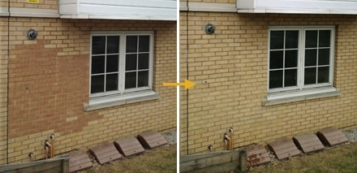

<div class="wrapper wrapper__main">

  <article class="content-middle">

    <h1 class="">What you need to know about conservation</h1>

    <h2 class="">Far too often the wrong bricks are selected for extension works. The photos below demonstrate that even in extreme cases, corrections can be made.
    Far too often the wrong bricks are selected for extension works.</h2>
    <p class="">Far too often the wrong bricks are selected for extension works. The photos below demonstrate that even in extreme cases, corrections can be made.
    Far too often the wrong bricks are selected for extension works. The photos below demonstrate that even in extreme cases, corrections can be made.</p>
    
    <p class="">Far too often the wrong bricks are selected for extension works. The photos below demonstrate that even in extreme cases, corrections can be made.
    Far too often the wrong bricks are selected for extension works. The photos below demonstrate that even in extreme cases, corrections can be made.</p>
    <p class="">Far too often the wrong bricks are selected for extension works. The photos below demonstrate that even in extreme cases, corrections can be made.
    Far too often the wrong bricks are selected for extension works. The photos below demonstrate that even in extreme cases, corrections can be made.</p>
    


</div>
